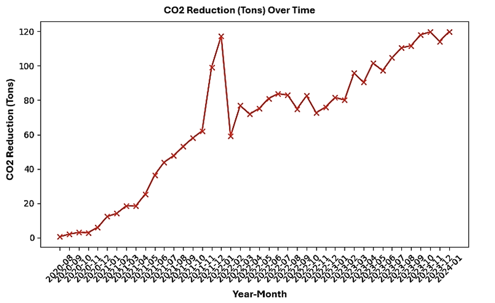

EV Charging Infrastructure Performance Evaluation

üìò Project Overview
This project evaluates the performance and reliability of EV charging infrastructure across 305 stations using over 41 months of operational data. It identifies bottlenecks, highlights inefficiencies, and offers actionable recommendations for infrastructure improvement and energy optimization.
üîç Scope and Methodology
- Data Collected: 305 stations | 17,500+ sessions | 41 months
- Key Metrics: energy throughput, session utilization, no-power frequency, CO₂ savings
- Techniques Used: Pearson correlation, regression analysis, Monte Carlo simulation

üìä Performance Analysis
- ~27% of stations had power loss during active sessions
- Idle time accounted for 38%+ of total time in urban zones
- ChargePoint contributed ~80% of the energy supplied, raising resilience concerns
- Monte Carlo risk model showed 19% availability risk if single provider failed


üåø Environmental Impact
By using EV chargers powered by renewable grids, the system prevented up to 120 tons of CO₂ emissions per month. CO₂ savings were calculated using the U.S. EPA’s factor of 0.43 kg CO₂/kWh.
üèÜ Station Rankings
We ranked the top and bottom 10 stations by energy efficiency and utilization performance:


üìå Recommendations
- Enable predictive maintenance alerts using machine learning
- Diversify charging network operators to reduce failure risk
- Incentivize solar-PV integration with fast-charging setups
- Adopt dynamic charging scheduling based on real-time demand
üìÑ Publication
Title: Data-Driven Insights for Optimizing EV Charging Infrastructure
Status: Under review at Global Energy Interconnection
Manuscript ID: GLOEI-D-24-00369R1